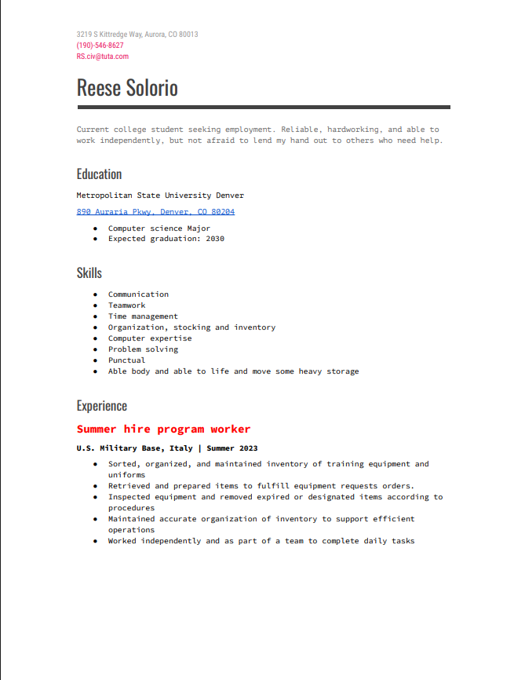

I am currently a student at MSU denver majoring in Computer science and plan to graduate in 2030.
I chosed to major in computer science becuase I enjoy web, game, and software development. They all have been topics that surrounded me majority of my life, and now I want to be apart of it.
I dream of being apart of it by becoming a game developer or software engineer, or even both, at Valve Corporation.
I am currently learning HTML, CSS, Bootstrap, and Cybersecurity. I currently have 2 projects that apply HTML, CSS, and Bootstrap
